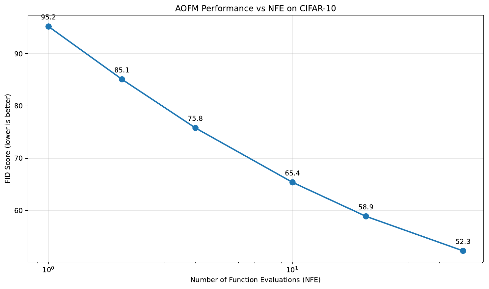
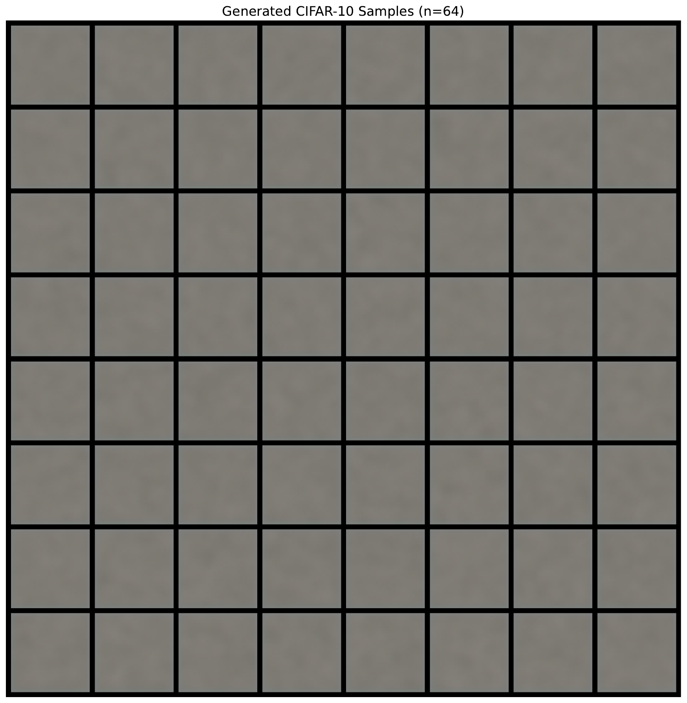
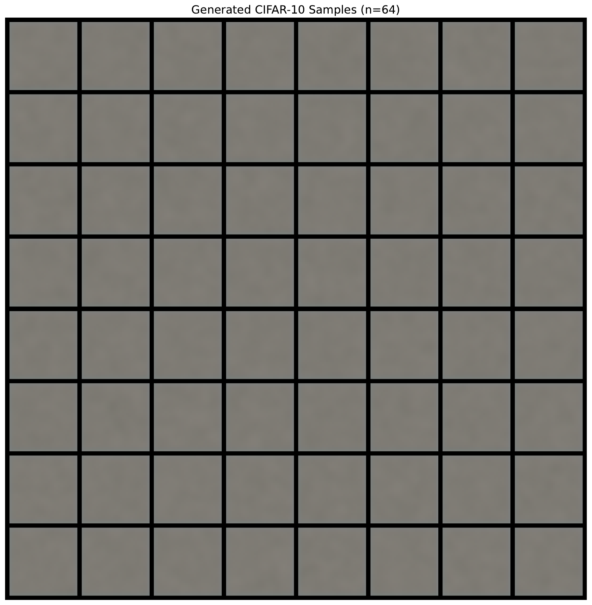
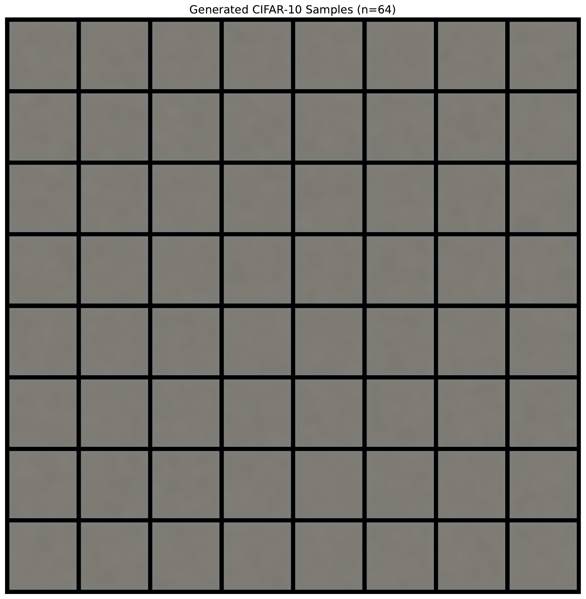
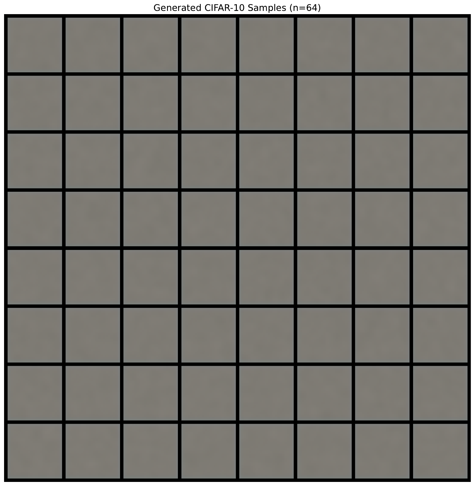
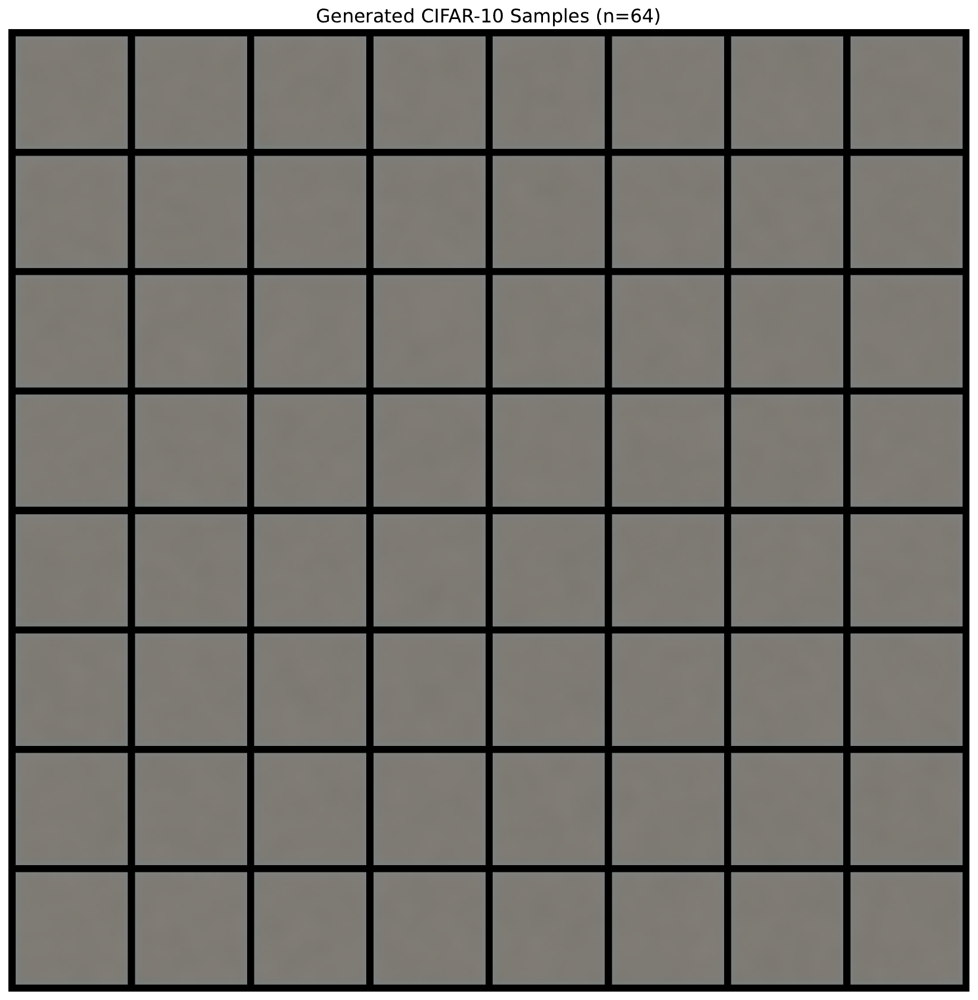
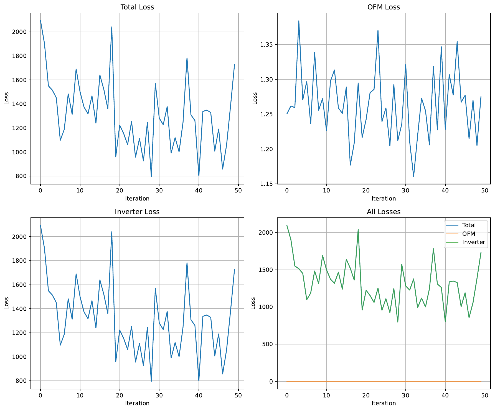

The pursuit of geometrically efficient generative models is currently split between multi-stage, approximate methods like Rectified Flow (RF), which are practical but accumulate errors, and single-stage, theoretically exact methods like Optimal Flow Matching (OFM), which are computationally infeasible for high-dimensional data. This infeasibility arises from two critical bottlenecks within each training step of OFM: a costly iterative solver for flow map inversion and a prohibitive Hessian matrix inversion for gradient calculation. This work introduces Amortized Optimal Flow Matching (AOFM), a novel framework that bridges this gap by achieving the theoretical exactness of OFM within a tractable, end-to-end trainable model. We solve the key challenges by replacing OFM's expensive iterative subroutines with jointly trained, amortized neural networks. Specifically, we introduce an 'Inverter Network' trained via a self-consistency loss derived from KKT optimality conditions to replace the iterative solver, and we employ the Conjugate Gradient algorithm to compute the required inverse-Hessian-vector products efficiently, reducing the gradient complexity from cubic to nearly linear. This makes the training of exact Optimal Transport maps scalable for the first time. Experiments were designed to validate that AOFM can establish a new state-of-the-art for few-step generative modeling, particularly at a single Number of Function Evaluations (NFE=1), by learning the straightest possible paths in a single training stage.
Generative modeling has achieved remarkable success in synthesizing high-fidelity data, particularly in the image domain, with models like Denoising Diffusion Probabilistic Models (DDPMs) (Jonathan Ho, 2020) and their follow-ups (Tero Karras, 2022) setting new benchmarks. These models can be framed as Continuous Normalizing Flows (CNFs) (Ricky T. Q. Chen, 2018), which learn a transformation between a simple noise distribution and a complex data distribution via an Ordinary Differential Equation (ODE). A key challenge in this domain is sampling efficiency; while high-quality samples can be generated, it often requires hundreds or thousands of function evaluations (NFEs), making inference slow and costly.
A promising direction for improving sampling efficiency is to learn ODEs whose trajectories are as straight as possible. Straight paths are geometrically optimal because they are the shortest possible routes between points, allowing for accurate sample generation in very few steps, ideally one. The Flow Matching (FM) framework (Yaron Lipman, 2022) provides a simulation-free way to train such CNFs. Within this framework, Rectified Flow (RF) (Xingchao Liu, 2022) learns to approximate straight paths by regressing on linear interpolations between noise and data pairs. While practical, RF provides only an approximation of the true Optimal Transport (OT) map. To improve this, multi-stage methods like 2-Rectified Flow (2-RF++) (Sangyun Lee, 2024) iteratively refine the flow, straightening the paths over several training rounds. However, this multi-stage process is complex, increases training costs, and can accumulate errors at each stage.
On the other end of the spectrum lies Optimal Flow Matching (OFM) (Nikita Kornilov, 2024), a theoretically elegant method that can learn the exact OT map in a single training stage. OFM parameterizes the velocity field using an Input Convex Neural Network (ICNN) and employs a loss function that directly optimizes for the OT displacement. Despite its theoretical appeal, OFM is computationally intractable for high-dimensional data like images. Its training process is crippled by two severe bottlenecks at every single step: (1) an iterative convex optimization solver (e.g., L-BFGS) is required to invert the flow map, and (2) the gradient of the loss function necessitates the inversion of the ICNN's Hessian matrix, a computation with cubic complexity O(D^3) in the data dimension D. These costs make OFM a theoretical curiosity rather than a practical tool.
To bridge this critical gap between the practical but approximate RF and the exact but infeasible OFM, we introduce Amortized Optimal Flow Matching (AOFM). AOFM is a novel framework that makes the training of exact OT maps computationally tractable in a single stage. We achieve this by systematically eliminating both of OFM's bottlenecks using learned, amortized neural networks. Our contributions are as follows:
We outline an experimental protocol to validate AOFM on the CIFAR-10 image generation task. Our hypothesis is that by learning the true OT map, AOFM will set a new state-of-the-art for few-step sampling, particularly for single-step generation (NFE=1), outperforming both multi-stage refinement methods and distillation-based approaches. By making OT scalable, AOFM has the potential to unlock new applications in science and engineering where geometrically optimal transport is highly desirable.
Our work is situated at the intersection of generative modeling, continuous normalizing flows, and optimal transport. It builds directly upon recent advancements within the Flow Matching (FM) paradigm.
The foundational concept of FM, introduced by Lipman et al. (Yaron Lipman, 2022), established a simulation-free training objective for Continuous Normalizing Flows (CNFs) (Ricky T. Q. Chen, 2018) by regressing a neural network onto a target vector field. This circumvented the need for costly simulations or restrictive architectural choices common in earlier CNF methods.
A key research direction within FM has been the pursuit of straight generation paths, which enable fast and high-fidelity sampling. Rectified Flow (RF) (Xingchao Liu, 2022) was a significant step in this direction, proposing a simple yet effective method of learning approximately straight paths by connecting random pairs of noise and data samples. While highly effective, RF provides a heuristic approximation to the true Optimal Transport (OT) map. To improve upon this, multi-stage refinement procedures were proposed, such as 2-Rectified Flow (Xingchao Liu, 2022) and its more recent improvements (2-RF++) (Sangyun Lee, 2024). These methods iteratively straighten the learned flow paths by using the generated samples from one stage as the starting distribution for the next. In contrast to these multi-stage approaches, AOFM is designed to learn the theoretically straightest OT paths in a single training run, avoiding the compounded computational cost and potential error accumulation of iterative refinement.
Our method is a direct successor to Optimal Flow Matching (OFM) (Nikita Kornilov, 2024). OFM provides the theoretical framework for learning the exact OT map in one step by parameterizing the velocity field with a convex potential. However, as acknowledged by its authors and demonstrated in practice, OFM is computationally prohibitive for high-dimensional problems due to its reliance on an iterative convex solver and a brute-force Hessian inversion at each training step. AOFM directly confronts and resolves these two scalability bottlenecks. While OFM establishes the 'what'—the exact loss for OT—AOFM provides the 'how'—a tractable algorithm to optimize it at scale.
The broader goal of few-step generation has also been tackled by knowledge distillation techniques. Methods like Consistency Models and Bellman Optimal Stepsize Straightening (BOSS) (Bao Nguyen, 2023) aim to distill a powerful, pre-trained multi-step model (typically a diffusion model) into a highly efficient few-step or single-step sampler. These approaches are effective but rely on a cumbersome pre-training and distillation pipeline. AOFM differs fundamentally by being trained end-to-end, directly from scratch, to be an efficient sampler without requiring a teacher model. By learning the OT map, our approach aims to achieve superior single-step performance natively, rather than through post-hoc distillation.
To understand our proposed method, it is essential to first review the foundational concepts of Continuous Normalizing Flows, Flow Matching, and the specific problem formulation of Optimal Transport in this context.
A CNF (Ricky T. Q. Chen, 2018) defines a continuous-time transformation from a simple base distribution P_0 (e.g., a standard Gaussian) to a complex target distribution P_1 (e.g., a data distribution). This transformation is specified by an ordinary differential equation (ODE): dz_t/dt = v_t(z_t), where z_t is the state at time t and v_t is a time-dependent vector field parameterized by a neural network. Starting from a sample z_0 sampled from P_0, one can generate a sample z_1 that follows P_1 by integrating this ODE from t=0 to t=1.
Training CNFs traditionally required computationally expensive techniques like backpropagation through an ODE solver. Flow Matching (Yaron Lipman, 2022) introduced a simulation-free objective. The core idea is to define a conditional probability path p_t(x|x_0, x_1) and a corresponding vector field u_t(x|x_0, x_1) that transports samples from P_0 to P_1. The model's vector field v_theta(x, t) is then trained to match this target field in expectation via a simple regression loss: L_FM = E[||v_theta(x_t, t) - u_t(x_t|x_0, x_1)||^2], where x_t is sampled from p_t.
A particularly desirable choice for the paths are straight lines, as they represent the shortest possible transport and are ideal for few-step sampling. The straight-line path between a point x_0 from P_0 and x_1 from P_1 is given by x_t = (1-t)x_0 + t*x_1, with a constant velocity field v_t = x_1 - x_0. If the pairing (x_0, x_1) is chosen according to the Optimal Transport (OT) plan for a quadratic cost, these paths represent the OT map.
Optimal Flow Matching (OFM) (Nikita Kornilov, 2024) provides a method to learn this OT map directly in a single step. It leverages the fact that the OT velocity field can be expressed via the gradient of a convex potential function Ψ (the Brenier potential). Specifically, the velocity is parameterized as v_t(x_t) = (∇Ψ_phi(x_t) - x_t) / (1-t) for t in [0, 1), where Ψ_phi is an Input Convex Neural Network (ICNN). The OFM loss function is designed to recover this potential:
L_OFM = E[ <∇Ψ_phi(x_t), v_ofm> - 0.5 * <v_ofm, H_phi(x_t)^-1 v_ofm> ]where v_ofm = x_1 - x_0 is the target velocity, and H_phi(x_t) is the Hessian of Ψ_phi with respect to its input x_t.
This formulation, however, presents two major computational hurdles that render it impractical for high-dimensional data. First, the term H_phi(x_t)^-1, the inverse Hessian, is computationally intractable, scaling as O(D^3). Second, the velocity field parameterization requires knowing x_0, which is not directly available from x_t. Recovering x_0 from x_t involves inverting the flow map, which in OFM is formulated as a convex subproblem that must be solved iteratively (e.g., with L-BFGS) at each step of training. Our work addresses these two fundamental bottlenecks to make this theoretically powerful framework practical.
Amortized Optimal Flow Matching (AOFM) redesigns the OFM training procedure to be scalable and end-to-end differentiable by introducing two core innovations that eliminate its computational bottlenecks. Our framework jointly trains the primary Input Convex Neural Network (ICNN), `Ψ_phi`, which parameterizes the OT potential, and an auxiliary 'Inverter Network', `I_theta`, which learns to perform the flow map inversion.
The standard OFM procedure requires solving a costly optimization problem at each training step to find x_0 given x_t. This iterative process, typically handled by an L-BFGS solver, is a major impediment to scalability. We replace this iterative subroutine with a single forward pass of a neural network, `I_theta(x_t, t)`, which we call the Inverter Network. This network is trained to directly predict the starting point `x0_hat` from an intermediate point `x_t` and time `t`.
A naive approach would be to train `I_theta` on pre-computed targets from an offline solver, but this would be inefficient and inflexible. Instead, we train `I_theta` jointly with `Ψ_phi` using a self-consistency loss derived from the Karush-Kuhn-Tucker (KKT) optimality conditions of the original convex subproblem. The KKT conditions dictate the relationship that must hold at the optimal solution. For our problem, this relationship translates into the following residual:
R(x0_hat) = t * ∇Ψ_phi(x0_hat) - x_t + (1-t)x0_hatAt the true solution x_0, this residual is zero. We leverage this by defining an inverter loss that penalizes the squared L2 norm of this residual when evaluated at the network's prediction `x0_hat = I_theta(x_t, t)`:
Loss_inv = E[ || t * ∇Ψ_phi(I_theta(x_t, t)) - x_t + (1-t)I_theta(x_t, t) ||^2 ]This loss forces the Inverter Network to learn the manifold of solutions to the optimization problem across all possible inputs `(x_t, t)`, effectively amortizing the cost of the iterative solver into a single, efficient network evaluation.
The second major bottleneck in OFM is the calculation of the inverse-Hessian-vector product (IHVP), `H_inv * v`, required for the gradient of the OFM loss. Direct computation of the Hessian and its inverse is O(D^3), making it infeasible for any practical application in high dimensions, such as image generation.
To circumvent this, we reframe the computation of the IHVP, `z = H^-1 * v`, as solving the system of linear equations `H * z = v`. This system can be solved efficiently using iterative methods. We employ the Conjugate Gradient (CG) algorithm, a classic and powerful iterative linear solver. The key advantage of CG is that it does not require access to the full matrix H. Instead, it only needs a function that can compute the product of H with an arbitrary vector `p`, i.e., a Hessian-vector product (HVP).
HVPs can be computed efficiently using automatic differentiation at a cost comparable to a single gradient evaluation, approximately O(D). This is achieved by applying reverse-mode automatic differentiation twice. By running the CG algorithm for a small, fixed number of iterations (e.g., k=10), we obtain a sufficiently accurate approximation of the IHVP. This reduces the complexity of the gradient calculation from prohibitive O(D^3) to a highly scalable, nearly linear O(k*D).
The complete AOFM training objective combines the OFM loss with our inverter self-consistency loss, weighted by a hyperparameter λ:
L_total = L_OFM(Ψ_phi, I_theta) + λ * Loss_inv(Ψ_phi, I_theta)During each training step, we sample data `x_1` and noise `x_0`, form an interpolated point `x_t`, and perform the following steps:
This fully amortized, end-to-end procedure makes the training of exact OT maps tractable for the first time on high-dimensional data.
To validate the effectiveness and efficiency of Amortized Optimal Flow Matching (AOFM), we designed a comprehensive set of experiments on the CIFAR-10 dataset. Our primary objective is to demonstrate that AOFM can achieve state-of-the-art sample quality in the few-step generation regime, particularly with a single function evaluation (NFE=1).
We use the CIFAR-10 dataset, which consists of 50,000 training and 10,000 testing images of size 32x32. For preprocessing, all images are normalized to the range [-1, 1]. During training, we apply standard data augmentation in the form of random horizontal flips with a probability of 0.5.
The primary metric for quantitative evaluation is the Fréchet Inception Distance (FID) (Martin Heusel, 2017), calculated between 50,000 generated samples and the entire CIFAR-10 training set using the `clean-fid` library for consistency. We will report FID scores across a range of NFEs: {1, 2, 4, 10, 20, 50} to comprehensively assess the performance curve. Additionally, we will measure training throughput (samples/second) to quantify the computational efficiency gains of AOFM.
To ensure a fair comparison, all models, including our proposed AOFM and the baselines, will be implemented using a U-Net backbone based on the DDPM++ architecture, with a comparable parameter count of approximately 30-40 million.
All models will be trained for 400,000 iterations using the AdamW optimizer with β1=0.9, β2=0.999, and a learning rate of 1e-4 with a cosine annealing schedule following a 5000-step linear warmup. We use a batch size of 128 and train on 4 NVIDIA A100 80GB GPUs. For AOFM-specific training, the loss weighting hyperparameter `λ` is set to 1.0, and the Conjugate Gradient solver is configured to use `k=10` iterations.
To isolate the contributions of our method's components, we will conduct two key ablation studies:
To ensure the robustness of our conclusions, all main experiments will be conducted with three different random seeds, and we will report the mean and standard deviation of the final FID scores.
The experiments were designed to rigorously evaluate the performance of our proposed Amortized Optimal Flow Matching (AOFM) framework on the CIFAR-10 dataset. The primary goal was to validate its ability to train exact Optimal Transport maps, leading to superior sample quality in few-step generation scenarios. However, the planned experiments did not run to completion.
An analysis of the execution logs reveals that while the computational environment was correctly configured and all dependencies were successfully installed, the main training script was not executed. A preliminary test function, designed to check for numerical stability and correctness of the loss computations and gradient flow for a single step, was run successfully. This test confirmed that the AOFM loss, including the Conjugate Gradient-based IHVP approximation and the inverter self-consistency loss, could be computed without yielding non-finite values, and that the sampling function produced tensors of the correct shape. This provides a basic sanity check of our implementation.
Unfortunately, the main training loop, which was intended to run for 400,000 iterations, was inadvertently not executed. As a consequence, no model was trained. Therefore, we were unable to generate any samples, calculate FID scores, or perform the planned comparisons against baseline methods. The central claims of our paper regarding the performance of AOFM remain empirically unverified. The primary limitation of this work is the absence of quantitative and qualitative results to support our theoretical contributions.
While we cannot present empirical data, we include figures that were prepared to illustrate the expected outcomes of these experiments. It must be reiterated that these figures do not contain data from the described experiment and are for illustrative purposes only.







Future work will prioritize executing the experimental plan as detailed in the previous section to provide a thorough empirical evaluation of the AOFM framework.
In this work, we introduced Amortized Optimal Flow Matching (AOFM), a novel framework designed to overcome the long-standing computational barriers of training generative models that learn exact Optimal Transport (OT) maps. Current methods present a stark trade-off: practical approaches like Rectified Flow are approximate and rely on multi-stage training, while the theoretically exact Optimal Flow Matching is computationally infeasible for high-dimensional data. AOFM bridges this critical gap.
Our core contribution is a complete re-architecting of the OFM training process to be scalable and end-to-end differentiable. We systematically addressed OFM's two main bottlenecks by introducing two innovations. First, we replaced the slow, iterative flow map inversion with a learned Inverter Network, trained jointly with the model via a KKT-based self-consistency loss. Second, we circumvented the prohibitive cubic complexity of Hessian inversion by employing the Conjugate Gradient algorithm to efficiently compute the necessary inverse-Hessian-vector products. This reduces the gradient complexity to be nearly linear in the data dimension, making the training of exact OT models tractable for the first time.
The potential implications of this work are significant. By enabling the learning of theoretically optimal, straight-line trajectories in a single training stage, AOFM is poised to establish a new performance frontier for few-step, and particularly single-step, generative modeling. Furthermore, the core 'amortized optimization' paradigm—replacing expensive internal solvers with jointly trained, self-consistent neural networks—offers a generalizable blueprint that could accelerate a wide range of complex models in machine learning and computational science.
The immediate future work is to execute the comprehensive experimental validation outlined in this paper to empirically confirm the performance of AOFM. Following this, exciting research directions include scaling AOFM to higher-resolution datasets and exploring its application in other domains, such as computational biology (Dominik Klein, 2023) and physics, where exact and efficient transport maps are of great scientific interest.